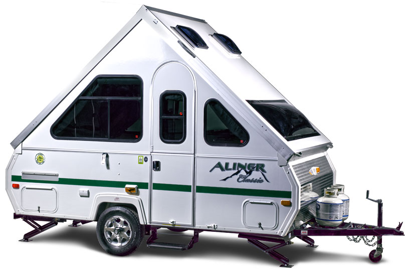

Веб-технологии

Лев Солнцев
10 лет профессиональной веб-разработки.

| Заголовок | |
|---|---|
| Ячейка | Ячейка с большим количеством текста показывает как браузер распределяет место в пользу длинной простыни текста. |
| Комментарии | https://web-standards.ru/articles/check-it-before-you-wreck-it/#comment |
table-layout: fixedoverflowtable-layout: fixed| Заголовок | |
|---|---|
| Ячейка | Ячейка с большим количеством текста показывает как браузер распределяет место в пользу длинной простыни текста. https://web-standards.ru/articles/check-it-before-you-wreck-it/#comment |
| Попапчик |
| Попапчик |
| Попапчик |
border-collapse: collapseborder-spacing: 0 (IE8+) и <table cellspacing=0>.table-layout: fixed делает таблицы предсказуемыми.
max-width.border-collapse: collapse (IE9−).
'кот'[0] // => 'к'
firstName[0] + lastName[0]
''[0] // -> undefined
(firstName[0] || '') + (lastName[0] || '')
str.charAt(index)
firstName.charAt(0) + lastName.charAt(0)
…В некоторых случаях ваш компонент может ускорить этот процесс через переопределение функции
shouldComponentUpdate, которая вызывается перед началом процесса нового рендеринга…
class Table extends Component {render() {return (<div>{this.props.items.map(i =><Cell data={i}options={this.props.options || []} />)}</div>
const default = [];class Table extends Component {render() {return (<div>{this.props.items.map(i =><Cell data={i}options={this.props.options || default} />)}</div>
class TextField extends Component {render() {return (<InputonChange={e => this.props.update(e.target.value)}/>;)}}
class TextField extends Component {update(e) {this.props.update(e.target.value);}render() {return (<Input onChange={this.update.bind(this)}/>;)}
class TextField extends Component {constructor(props) {super(props);this.update = this.update.bind(this);}render() {return <Input onChange={this.update}/>;}

for (var tr = tbody.firstChild; tr = tr.nextSibling;)
for (var td = tr.firstChild; td = td.nextSibling;)
if (td.scrollWidth > td.clientWidth)
td.title = td.textContent;
var cells = [];
for (var tr = tbody.firstChild; tr = tr.nextSibling;)
for (var td = tr.firstChild; td = td.nextSibling;)
if (td.scrollWidth > td.clientWidth)
cells.push(td);
for (var i = cells.length; i--;)
cells[i].title = cells[i].textContent;
Ускорение в ~5 раз.
var elem = document.getElementsByClassName('class')[0];var elem = document.querySelector('.class');
| Test | Ops/sec |
|---|---|
| getElementsByClassName('class')[0] | 5,519,101 ±0.56% fastest |
| querySelector('.class') | 55,479 ±1.23% 99% slower |
| jQuery $('.class') | 62,742 ±1.18% 99% slower |
| Метод | 1-й, мкс | 2-й, мкс |
|---|---|---|
querySelector |
40 | 40 |
getElementsByClassName |
45 | 15 |
jQuery |
300 | 40 |
Примечание: Коллекции в DOM для HTML являются живыми в том смысле, что они автоматически обновляются при изменениях соответствующего им документа.
Email: grelimail@gmail.com
Twitter: @ruGreLI